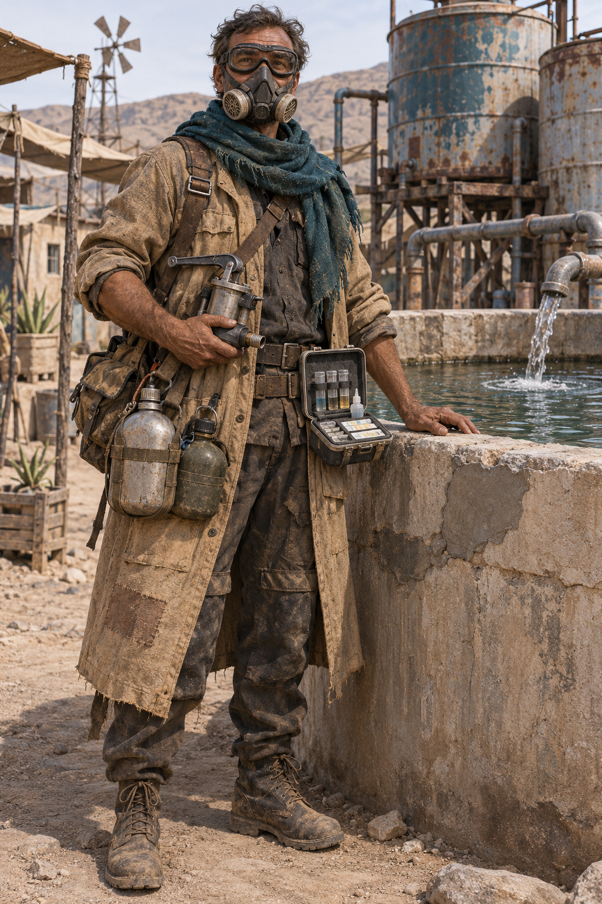

No início da extinção, Poço entendeu que cada deslocamento dependia de água suficiente e de recipientes em condições de uso.
PROPOSTA DE LORE // EM REVISÃO
POÇO.
Poço conhece cisternas, bombas e pontos de coleta. O trabalho exige paciência: encontrar água não basta; é preciso verificar, tratar e guardar o recurso com cuidado.
ABRIR ARQUIVO FOTOGRÁFICO →
Este dossiê apresenta uma proposta revisável com base no conceito visual e na função do personagem. Idade, nome civil, datas e vínculos pessoais ficam em aberto quando ainda não foram definidos.
O que a extinção
deixou nele.
Os registros abaixo organizam sua função e sua trajetória em linhas gerais. As cenas específicas continuam abertas à revisão.
Anos respirando fumaça e poeira fizeram dos filtros e dos óculos vedados parte constante do seu equipamento. Ele aprendeu a manter bombas e a avaliar reservas antes de liberar o abastecimento.
No presente, ajuda a planejar o consumo da base e das equipes de campo. É rigoroso com desperdício, mas nunca nega água a uma criança ou a alguém ferido.
Água e abastecimento
- Manutenção de bombas e cisternas
- Coleta e tratamento de água
- Controle de reservas e recipientes
Exposição prolongada a fumaça e poeira; utiliza proteção respiratória.
O que carrega
por dentro.
Prático, cuidadoso e econômico com recursos. Poço é direto nas conversas e demonstra carinho garantindo que ninguém seja esquecido na distribuição.
“Água segura muda o que ainda é possível.”